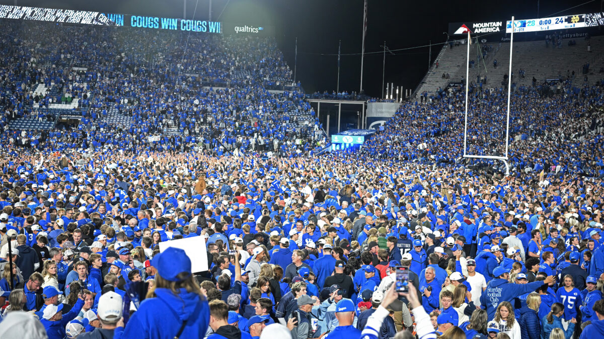
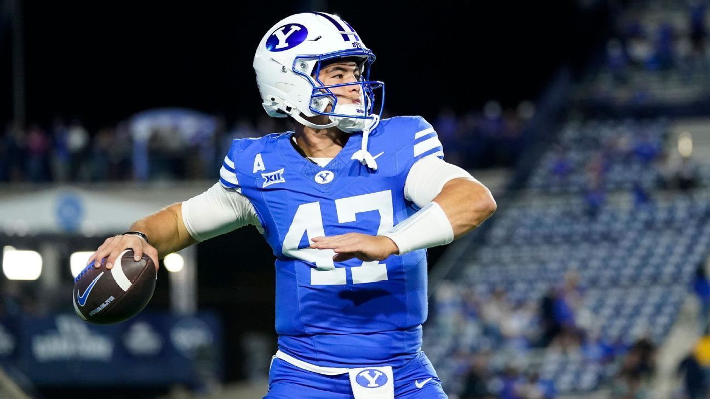

The 2026 Season So Far
BYU is 7-1 this year and 4-1 in the Big 12. They started the season 6-0, beat a top 2 Notre Dame team at home, and got all the way up to No. 2 in the country before losing in double overtime at UCF. Right now they are ranked No. 7 in the AP poll.
This page goes through the season using the stats from each game. All numbers are through the Arizona State game on October 31.
Season at a Glance
| Stat | Number |
|---|---|
| Record | 7-1 (4-1 Big 12) |
| Home record | 5-0 |
| Road record | 2-1 |
| Points per game | 32.4 |
| Points allowed per game | 18.8 |
| Total yards per game | 397.9 |
| Rushing yards per game | 175.4 |
| Passing yards per game | 222.5 |
| Yards allowed per game | 298.8 |
| Sacks by the defense | 18 |
| Turnovers (forced / lost) | 9 / 8 |
Game by Game
| Date | Opponent | Result | Total Yards | Rush Yards | Pass Yards |
|---|---|---|---|---|---|
| Sep 5 | Utah Tech | W 63-7 | 521 | 308 | 213 |
| Sep 12 | Arizona | W 28-17 | 365 | 148 | 217 |
| Sep 19 | at Colorado State | W 41-23 | 559 | 332 | 227 |
| Oct 3 | at TCU | W 17-10 | 216 | 154 | 62 |
| Oct 9 | Iowa State | W 24-10 | 506 | 177 | 329 |
| Oct 17 | Notre Dame | W 28-24 | 360 | 121 | 239 |
| Oct 24 | at UCF | L 31-39 (2OT) | 373 | 116 | 257 |
| Oct 31 | Arizona State | W 27-20 | 283 | 47 | 236 |
Biggest Moments So Far

- Beating Notre Dame (Oct 17)
- BYU won 28-24 over the No. 2 team in the country
- Bear Bachmeier threw the game winning touchdown to Walker Lyons with 1:53 left
- Bachmeier also caught a touchdown pass on a trick play
- LJ Martin at Colorado State (Sep 19)
- 176 rushing yards and 3 touchdowns
- All 3 touchdowns came in the first quarter
- BYU ran for 332 yards as a team, the most this season
- The Loss at UCF (Oct 24)
- BYU was No. 2 and lost 39-31 in double overtime
- A blocked field goal sent the game to overtime
- Kyler Kasper had 6 catches for 129 yards
Big 12 Standings (Top 5)
| Team | Big 12 | Overall |
|---|---|---|
| Utah | 5-0 | 8-0 |
| BYU | 4-1 | 7-1 |
| Texas Tech | 4-1 | 7-1 |
| Arizona | 3-2 | 6-2 |
| Houston | 3-2 | 6-2 |
The top two teams play in the Big 12 Championship on December 4 in Arlington, Texas. BYU plays at Utah this Saturday, November 7.
Games Left
- Nov 7 - at Utah (Holy War)
- Nov 14 - Baylor
- Nov 21 - at Kansas
- Nov 28 - Cincinnati
Game Highlights

Here are the highlights from every BYU game this season. Click a game to watch it on YouTube.
- Week 1: BYU 63, Utah Tech 7
- Week 2: BYU 28, Arizona 17
- Week 3: BYU 41, Colorado State 23
- Week 5: BYU 17, TCU 10
- Week 6: BYU 24, Iowa State 10
- Week 7: BYU 28, Notre Dame 24
- Week 8: UCF 39, BYU 31 (2OT)
- Week 9: BYU 27, Arizona State 20
Latest Game: BYU vs Arizona State
Points Scored vs Allowed
I made this chart in Tableau using the stats from each game. It shows how many points BYU scored and gave up in every game this season. Hover over a bar to see the exact score.

My Game
For the last part of this project I made a basketball shooting game with AI. Click here to play it.